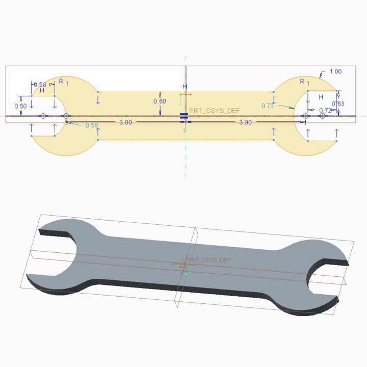
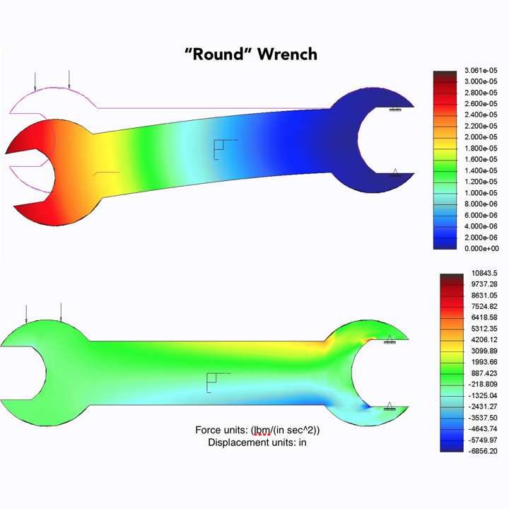
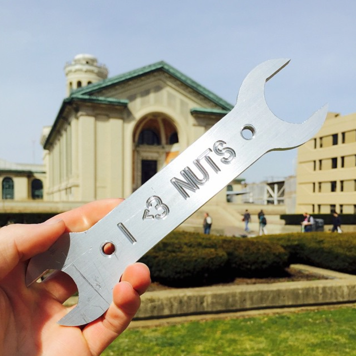

Wrench Fabrication
A large project in CMU's Fundamentals of Mechanical Engineering course is to design, test, and manufacture an aluminum wrench. We used PTC Creo to design and stress test the wrench and milled the tool using a CNC lathe. It was awesome.


On the left is the final wrench design and rendering. We created a version with rounded edges and a version with sharpened edges to compare their performance.
To the right is stress profile for one of the wrenches when a torque is applied as though it was in use. Once the wrench was designed, we set parameters for the CNC mill, and milled the wrench from an aluminum bar. Below is the final product; engraved with a pun!
